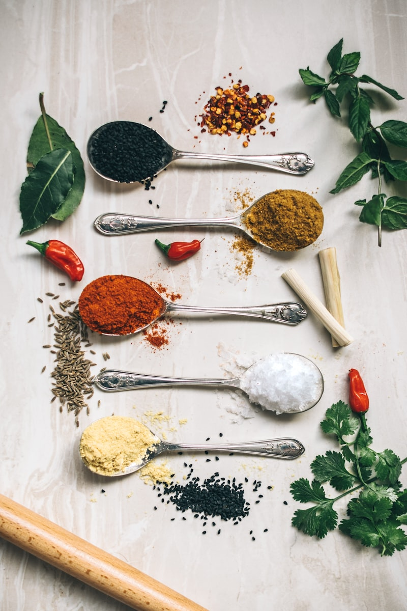

How our hardware engineers cast, temper, and copper-coat handle rivets to prevent shifts.

The structural strength and thermal stability of a luxury pan depends entirely on its hammering geometry. The panel layout, consisting of vertical walls, flat bases, and trimmed rim lips, translates raw copper strength into comfortable cooking utility. The iron anvil acts as a mechanical gate, shaping hot metal sheets at precise dimensions. This physical interaction is what creates the perfect stackability in the cupboard.
Calibrating the cookware patterns requires adjusting the side wall slopes. If the wall panels flare outwards too early, the pan will warp under high heat, causing an uneven base that cannot sit flat on gas cooktops. If it rises too tightly, the steam ventilation will shrink, causing food to pool at the center. Our master coppersmiths adjust these parameters under steel rib templates, ensuring the walls have a target angle of twelve degrees for optimal heating.
The glowing beauty of fine copper cookware depends on its refining process, functioning similarly to quartz glass processing. The raw copper, mined from organic mineral beds, must be heated in smelting furnaces to separate iron impurities. This refining process ensures that only high-purity copper blocks are rolled, preventing hot spots and structural grain cracks.
Additionally, we age our hammered shells inside dry warehouses for six weeks. This resting allows internal stresses to relax, increasing metal stability and strength. By using refined sheets, we guarantee that the coppersmiths can hammer pan walls down to three millimeters without structural splits. We also hammer the surfaces by hand using round hammers to increase density before tinning.
A watch-like precision is required to align iron handles of hot pans. Mass-produced cookware uses uniform machine spot welds that create weak, thin bonds. These weak welds snap under heavy food loads, causing kitchen accidents. We avoid this by setting three solid copper rivets manually through iron handles.
Drilling the holes through the thick copper wall, our smiths set matching rivets one-by-one using hydraulic presses. This alignment process requires immense hand-eye coordination and pressure control, taking up to fifteen minutes for each handle rivet. The result is a balanced, lightweight pan that allows chefs to flip ingredients safely without handle shifts.
A luxury cookware set should display non-reactive interior linings. We melt our tin slips in-house using pure food-grade metal blocks, avoiding toxic lead compounds completely. The tin reacts and bonds under high flame temperatures, creating a protective coating. This reactive process guarantees that acidic tomato sauces cannot corrode the copper wall.
Furthermore, managing the lining requires reduction flames. We adjust the propane torches to consume oxygen inside the pot chamber, forcing the heat to melt tin slips evenly along the copper surface. This hand-wiped tinning process transforms molten metal into a uniform silver mirror, creating a smooth barrier that prevents metal leeching completely.
Forging custom chef blades for our kitchen collections requires high-temperature heat treatment. Mass-produced knives use cheap stainless sheets that dull after a few cuts. At Kitchenvora, we hammer high-carbon steel billets containing nickel alloys on pneumatic hammers. We fold the steel blocks forty-eight times to create Damascus layers.
This folding process requires tempering the blades inside temperature-controlled furnaces up to 1550°F. The heat alignments reorganize carbon crystals, hardening the steel edge to 62 Rockwell. This tempering process ensures that the knife edge remains sharp and does not chip during cutting, keeping your kitchen prep easy for generations.
Caring for fine copper pans and seasoned oak boards is an active, rewarding ritual. Unlike mass cookware, luxury tins require specific washing to prevent lining scratches. We recommend washing your copper vessels in warm water using non-abrasive liquid soap and soft sponge pads. Avoid wire pads, as they scratch the tin lining.
If you store copper pans in cupboards, hang them on wall racks or place felt dividers between them. The dividers prevent the iron handles of upper pots from scraping the polished exterior surfaces of lower pots. For seasoned oak boards, apply food-safe mineral oil monthly to prevent wood drying and structural micro-cracks.
At Kitchenvora, we are dedicated to preserving the traditional metalsmithing skills that have defined manual throwing for centuries. We train apprentices in the arts of kickwheel throwing, glaze chemistry, and gold painting. By limiting our output to a few hundred dinner sets per year, we ensure that every client receives the undivided focus and care of our master potters.
As we look ahead, we will continue to blend these heritage pottery skills with modern tablescape design. We hope to inspire dining enthusiasts by sharing our craft story and providing journals on ceramic care. By supporting local kaolin mines and choosing organic minerals, we contribute to a sustainable, responsible dining future. Invest in slow-craft dinnerware, explore our vault, and experience ceramic art today.
In addition to these core weaving sections, we encourage outerwear enthusiasts to look at historical pocket designs and vintage looms. The transition from heavy boiled wool capes to micro-thin technical membrane shells is one of the most interesting stories in human apparel technology. Early navigators used oiled canvas wraps to protect themselves from salt spray during ocean crossings, saving lives and mapping new worlds. Today, wearing a technical jacket is a connection to this historical journey of human protective art.
Furthermore, Kitchenvora commits to eco-friendly packaging and carbon-neutral distribution. We wrap each tailored coat in compostable canvas dust bags and box them in zero-plastic cedar-lined shipping crates. Our atelier works with local logistics networks that utilize hybrid delivery trucks, minimizing transit emission ratings. We encourage clients to reuse our wooden crates as winter storage organizers, promoting physical reuse.
In conclusion, crafting a premium technical jacket requires a balanced mix of membrane lamination, seam sealing, and hardware selection. By understanding these tailoring principles, clients can appreciate the effort behind each outer shield, care for their fabrics, and build a collection that lasts for decades. A hand-taped waterproof shell is a functional work of art.
Kitchenvora is proud to support these traditional outerwear methods. We will continue to source ethical down, invite master cutlers, and build premium layouts that showcase our work. Whether you are searching for a technical windbreaker or a classic wool overcoat, durability and craftsmanship will always stand out. Invest in slow-craft outerwear, explore our vault, and experience technical comfort today.
To ensure absolute comprehension of this topic, we advise reading related articles on our blog index page. Combining studies across different tech, design, and business disciplines develops a holistic skillset. Kitchenvora provides these guides free of charge as part of our global commitment to democratizing outerwear education. Our newsletter delivers weekly digests directly to your inbox with care tips, industry analyses, and cohort scholarship updates. Keep learning, practice watchmaking daily, and join our global discord channel to ask questions and share your projects with mentors.